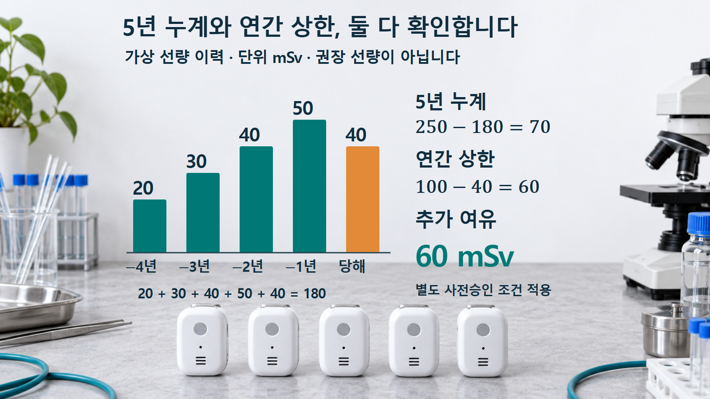
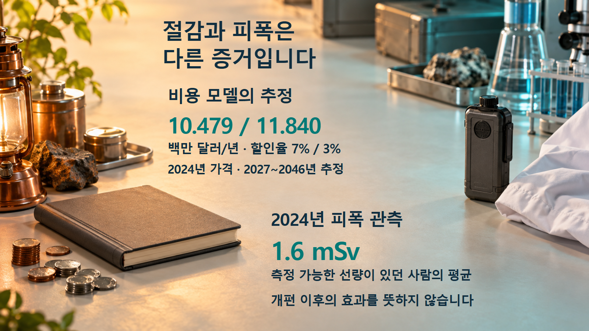

미국 규제 · 방사선방호
NRC 규제 개편: 선량 한도가 같아도 달라지는 것들
5년 선량 계산, 공중 피폭 예외, 비용 추정과 관측 자료를 통해 개편의 실질을 읽습니다.
방사선방호 규정을 바꿀 때 기본 선량 한도를 유지한다는 설명만으로 변화의 크기를 판단할 수 있을까요. 미국 NRC의 2026년 규칙안은 관리 원칙, 예외와 보고 조건도 함께 다룹니다. 의회가 요구한 자료와 실제 조문을 살펴보면 숫자 하나보다 적용 조건과 입증 자료가 중요하다는 점을 알 수 있습니다.
의회가 요구한 것은 결론을 뒷받침할 자료입니다
9월 18일 미국 의회의 Marcy Kaptur 하원의원과 Patty Murray 상원의원은 NRC에 규제 개편 관련 17개 자료 항목을 15일 이내 제공하도록 요구했습니다. 요구는 바뀌는 규정의 목록과 근거, 투입 인력·비용, 내부 이견, 개별·누적 안전 영향, 실제 성과 지표까지 이어집니다. 감독 서한 자체가 안전 저하를 확정한 조사 결과이거나 선량 기준을 바꾼 법률은 아닙니다.[1, pp.2~3]
쉽게 묶으면 “무엇을 바꿨는가, 왜 바꾸는가, 자원을 얼마나 쓰는가, 같은 보호 수준을 무엇으로 확인하는가”라는 질문입니다. 이 가운데 규칙안과 비용 분석은 공개돼 있지만 모든 개편의 실제 투입 원가와 이견 처리, 누적 영향이 한 문서로 입증됐다는 뜻은 아닙니다. 요청일에 15일을 더하면 10월 3일이지만, 이는 단순 달력 계산입니다. 9월 29일 시점의 공개 회신 미확인만으로 기한 위반을 말할 수 없습니다.[1][10]
먼저 규칙안과 시행 중인 규정을 구분합니다
이 글이 다루는 방사선방호 개편은 7월 15일 공고된 규칙안입니다. 제안 조문을 지금 적용되는 확정 규정으로 읽으면 안 됩니다. 같은 NRC 개편 소식이라도 6월 16일 공포돼 8월 17일 효력이 생긴 수수료 최종규칙과는 단계가 다릅니다. 행정명령의 일정, 규칙안, 최종규칙, 시행일을 각각 확인해야 합니다.[2, p.43456][5, p.36470]
규칙안은 기본 직업피폭 총유효선량당량 50 mSv/년과 일반 공중 1 mSv/년을 유지하는 한편, 관리 방식과 예외·보고 조건을 바꾸려 합니다. mSv는 방사선의 인체 영향을 고려한 선량 단위입니다. 여기의 값은 각각 해당 규정의 대상·선량량·기간에 적용되며, 자연방사선이나 의료피폭을 모두 합쳐 단순 비교할 숫자가 아닙니다.[2, pp.43494~43495]
기존 ALARA는 “합리적으로 달성 가능한 한 낮게” 피폭을 관리하는 원칙입니다. NRC의 기존 해석도 가능한 모든 수단을 써서 절대 최소 선량을 만들라는 뜻은 아니라고 설명합니다. 제안은 이를 절차·공학적 제어·단계적 선량 관리 문구로 바꾸려는 것입니다. 따라서 기존 제도를 무제한 저감 의무로 묘사하거나, 제안이 모든 방호 조치를 없앤다고 설명하는 것은 모두 정확하지 않습니다.[8][2, pp.43493~43494]
5년 합계와 한 해의 상한을 동시에 계산합니다
계획 직업 선량 한도 연장 제안은 총유효선량당량 기준으로 현년과 직전 4년의 합계 250 mSv, 단일 연도 100 mSv라는 두 제약을 함께 둡니다. 이것은 일반 작업자가 매년 100 mSv까지 자유롭게 피폭해도 된다는 뜻이 아닙니다. 사전 서면 승인, 위험과 관리 조치 설명, 정확한 선량 이력 등이 전제되며, 임신을 신고한 사람과 미성년자는 제외됩니다. 수정체에는 별도 한도가 있습니다.[2, pp.43494~43495, §20.1205]
조건을 이해하기 위한 가상 예를 보겠습니다. 직전 4년 선량이 20·30·40·50 mSv이고 올해 이미 40 mSv를 받았다면 5년 누계는 180 mSv입니다. 250 mSv까지는 70 mSv가 남습니다. 하지만 올해는 100 mSv 상한까지 60 mSv만 남으므로 두 제약을 함께 적용한 산술적 추가 여유는 60 mSv입니다. 작은 쪽의 여유가 제한을 결정합니다.[2, §20.1205]
이 60 mSv는 가상 계산 결과이며 권장 선량이나 실제 승인량이 아닙니다.

공중 피폭 예외에도 적용 조건이 있습니다
공중 기본 한도 1 mSv/년을 유지하는 제안과, 별도 승인 예외에서 기존 500 mrem/년(5 mSv/년)의 고정 상한을 삭제하는 제안은 동시에 읽어야 합니다. 한도가 유지된다는 설명만으로 예외 경로의 변화가 사라지지는 않습니다.[2, p.43495, §20.1301]
그렇다고 자동으로 제한 없는 피폭을 허용하는 내용도 아닙니다. 사전 NRC 승인과 예외의 필요성·기간·관리, 공중의 건강과 안전을 보호한다는 근거가 필요합니다. 실제 영향을 판단하려면 누구의 어떤 체류 조건과 선량 평가를 근거로 예외를 승인하는지까지 살펴봐야 합니다.[2, pp.43473~43474·43495]
연간 절감 추정은 건강 영향을 측정한 값이 아닙니다
원 규제 분석은 방사선방호 개편의 연간 환산 순절감액을 할인율 7%에서 1,047만 9천 달러, 3%에서 1,184만 달러로 추정합니다. 2024년 가격과 2027~2046년의 20년 평가 기간을 사용한 결과입니다. 할인율은 서로 다른 시점의 비용을 같은 시점의 가치로 비교할 때 쓰는 가정입니다. 두 값은 통계적 오차 범위의 양끝이 아닙니다.[9, 표 ES-1·§4.2]
절감 추정에는 행정과 노동 비용 등이 포함됩니다. 이 분석의 경제 입력에 불확실성을 주어 반복 계산했다는 사실을, 암 발생이나 현장 안전성을 그 횟수만큼 실험했다는 뜻으로 읽을 수는 없습니다. 비용이 줄어든다는 주장은 실제 피폭과 보호 수준이 유지된다는 증거와 따로 검증해야 합니다.[9, §§4.2·5]
평균을 읽을 때는 대상과 시점을 확인합니다
NRC의 2024년 직업피폭 통계에서 이동 근로자 중복을 보정한 감시 대상은 90,579명, 측정 가능 선량이 기록된 사람은 42,352명입니다. 평균 1.6 mSv는 후자의 평균입니다. 모든 감시 대상 근로자의 평균이 아닙니다. 또한 2024년 자료는 2026년 개편의 효과를 보여 주는 사후 실적이 아니라 그 이전의 기준선입니다.[11, pp.iii·v]
평균이나 총량만 같아도 분포는 달라질 수 있습니다. 가상으로 100명이 각각 1 mSv를 받은 경우와 10명이 각각 10 mSv를 받은 경우의 집단선량은 모두 100 인·mSv입니다. 하지만 개인에게 피폭이 집중되는 정도는 다릅니다. 그래서 작업량, 개인별 높은 선량 구간, 다년 누계와 기록 누락 여부도 함께 봐야 합니다.[11; 집단선량은 설명용 계산]
비용 절감 전망과 피폭 관측 자료는 서로 다른 질문에 답하며, 하나로 다른 하나를 대신할 수 없습니다.

같은 숫자 아래에서 바뀌는 조건을 읽습니다
규제 개편을 평가할 때는 조문의 상한뿐 아니라 예외 승인, 기록과 보고, 현장 관리가 어떻게 연결되는지 확인해야 합니다. 예를 들어 보고 기준이 달라진 뒤 보고 건수가 줄었다면, 사건이 줄었는지 보고 대상이 줄었는지를 먼저 구분해야 합니다. 검사 지적이 줄어도 검사 범위와 시간까지 함께 변했다면 해석이 달라집니다.[1, 요구 14~16][2, §20.2203]
이번 자료가 보여 주는 핵심은 비용 절감과 보호 수준에 각각 맞는 증거가 필요하다는 점입니다. 최종 조문과 시행 조건, 같은 정의로 수집한 피폭·검사 자료, 내부 이견의 처리와 미해결 사항을 이어서 확인해야 개편의 실제 효과를 판단할 수 있습니다.[1][2][6][11]